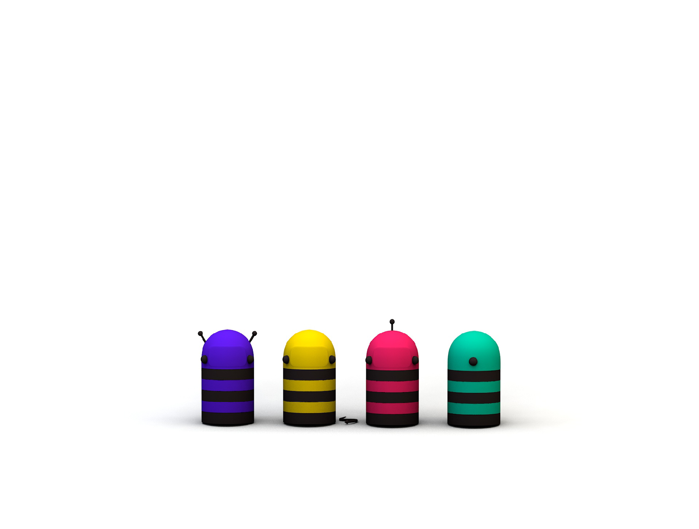

JEDE SMEĆE IZ KRAJA


KANTE ZA RECIKLAŽNI OTPAD
REAGUJE NA UBAČENO SMEĆE
PODESIVA VELIČINA
projekat
Pčelica
aždaja
aždaja
Interaktivna kanta za reciklažni otpad
zadatak
Master rad
Pčelica aždaja je usled zračenja savremenog društva evoluirala.
Umesto nektarom i polenom koji se nalaze na cveću, ona svoju
hranu traži u smeću. Njeno, kao i prisustvo ostalih pčela na planeti,
zavisi od čoveka. Svako je pozvan da je nahrani i svakome ko to
učini ona će se srdačno zahvaliti.
Pčelica aždaja je brend koji za glavni cilj ima podizanje svesti o
važnosti očuvanja životne sredine.
predmet
Prostorna grafika
profesor
Miloš Ilić